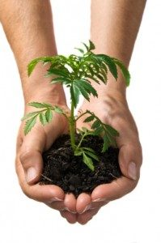

¿QUÉ SON LAS PLANTAS?
Las plantas son seres vivos que producen su propio alimento mediante el proceso de la fotosíntesis. Ellas captan la energía de la luz del sol a través de la clorofila y convierten el dióxido de carbono y el agua en azúcares que utilizan como fuente de energía.
PLANTAS
REGRESAR
PARTES DE UNA PLANTA
Raíz: su función es fijar a la planta. Mediante ella las plantas obtienen nutrientes del suelo.
Tallo: es el que le da soporte a la planta; algunos tallos son delgados y flexibles, otros, como los de los árboles, son leñosos y duros.
Hoja: es la estructura donde se realiza la fotosíntesis y la respiración.
Flor: es el órgano reproductor. En su interior posee todos los órganos que necesita para fabricar el fruto y la semilla.
PLANTAS
REGRESAR
IMPORTANCIA DE LAS PLANTAS
Desde tiempos remotos hasta la actualidad la humanidad ha dependido de las plantas. De ellas se obtienen productos para satisfacer necesidades de alimento, vivienda, energía, salud, vestido y estética. El interés por las plantas ha permitido observar mejor sus características y hacer un mayor uso de ellas. Las plantas tienen un notable valor económico, estético y recreativo, pero sobre todo ecológico:
• El valor económico de las plantas proviene de los productos que se extraen de ellas, como madera, materias primas, sustancias orgánicas y medicinales.
• El valor estético y recreativo de las plantas mejora nuestra calidad de vida, brindándonos espacios para descansar o estimular los sentidos.
• El valor ecológico de las plantas es fundamental, pues además de proporcionarnos oxígeno, actúan como filtros de los contaminantes del aire y el agua, protegen y fertilizan el suelo, regulan la temperatura, aminoran el calentamiento del planeta y son la base de la cadena alimenticia.

PLANTAS
REGRESAR
FLORES
Las flores son importantes en la fabricación de semillas. Las flores se componen de diversas partes: parte masculina llamada
estambre y parte femenina llamada
pistilo.
El estambre tiene dos partes:
antera y
filamento. Las anteras contienen el
polen, que generalmente es de color amarillo y están sostenidas por hilos delgados llamados filamentos.
El pistilo se divide en:
estigma,
estilo y
ovario. El estigma es la superficie pegajosa que se encarga de atrapar y sostener al polen. El estilo es como un tubo que va desde el estigma al ovario. En el ovario se encuentran los óvulos.
Cuando en la parte interna de la flor el ovario es fecundado por el polen, comienza a transformarse en
fruto. Los óvulos que contenía se convierten en
semillas.
Otras partes de la flor que son importantes son los
pétalos y los
sépalos. Los pétalos atraen a las abejas y es la parte que da color a las flores. Los sépalos son como pétalos verdes en la base de la flor.
Las flores son muy importantes para la existencia de la vida de los vegetales.
PLANTAS
REGRESAR
FRUTOS
Los frutos
Los frutos varían según la distribución de las semillas dentro de ellos o cuántas tengan. Las naranjas, las manzanas y los tomates tienen gran cantidad de semillas.
Las peras y los membrillos las albergan dentro una cápsula semi-dura que está en el interior de la fruta.
En el tomate y las uvas, las semillas se hallan protegidas por una pulpa jugosa y carnosa.
Los damascos y ciruelas, tienen una sola semilla que se encuentra dentro de una envoltura dura.
Hay frutos que carecen de pulpa y que se consideran como frutos secos. Como ejemplos de ellos tenemos la almendra, nueces, cacahuetes.
PLANTAS
REGRESAR